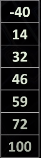
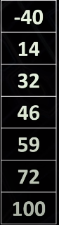

convertir grados Celsius a Fahrenheit:
Formula: F = C * 1.8 + 32
- Con programacion regular:
F = C * 1.8 + 32
- Apredizaje automatico:
no conocemos la formula de conversion, se trabaja con entradas de celsius y resultado en fahrenheit y esperamos q el modelo aprenda el algoritmo.
- ejemplo:
CELSIUS FAHRENHEIT
 

Las redes neuronales se separan en capas q ademas pueden tener una o mas neuronas. Siempre hay una capa de entrada (datos de entrada) y otra de salida (datos de salida). Las capas intermedias se llaman capas ocultas.
Cada neurona se conecta con otra mediante conexiones, cada una tiene un peso (numero) q representa la importancia de la conexion.
Cada neurona menos la capa de entrada tiene un sesgo (numero).
Procesos de la red neuronal:
Indicamos los grados celsius, este se multiplicara por el peso de la conexion y llegan a la siguiente neurona, luego se le sumara el sesgo y ese sera el resultado.
Los valores del sesgo y el peso de la conexion se inician de forma aleatoria.
USAR GOOGLE COLAB - PYTHON